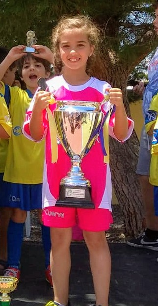

/*
🥇 Campeona prebenjamín (2018/2019)
Con solo 7 años, Cayetana lideró al Ogíjares 89 CF como única niña en un equipo masculino campeón de liga.

💪 Regreso tras lesión (2022)
Superó una fractura en el brazo y volvió a los terrenos de juego con más fuerza y carácter.
⚽ Participación en Copa de Andalucía (Enero 2023)
Fue titular con la Selección Granadina Alevín Femenina en la Copa de Andalucía, destacando por su entrega y liderazgo.
🎯 Subida a Cadete (2024/2025)
Siendo infantil, fue subida a competir en la categoría 1ª Andaluza Cadete del Granada CF S.A.D., siendo titular en 24 partidos y marcando 11 goles en total entre el equipo de cadete e infantil del Granada.
⚽ Gol como capitana de la selección granadina (Noviembre 2024)
Cayetana marcó un gol ante Jaén y fue una de las capitanas del combinado provincial sub-14.
 ▶ Ver el gol
▶ Ver el gol